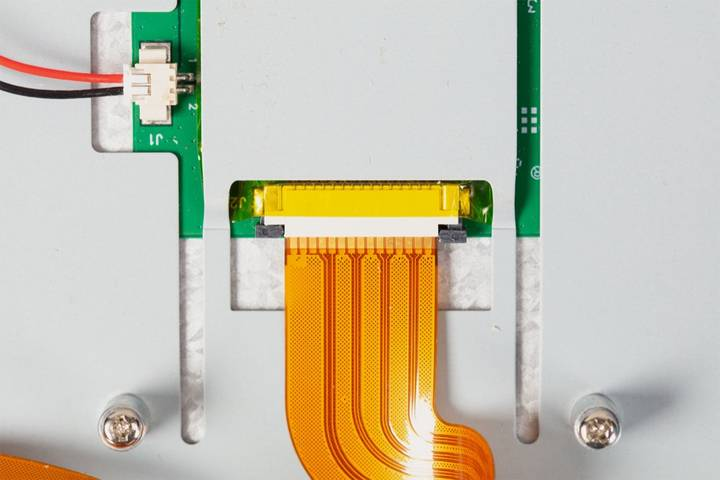
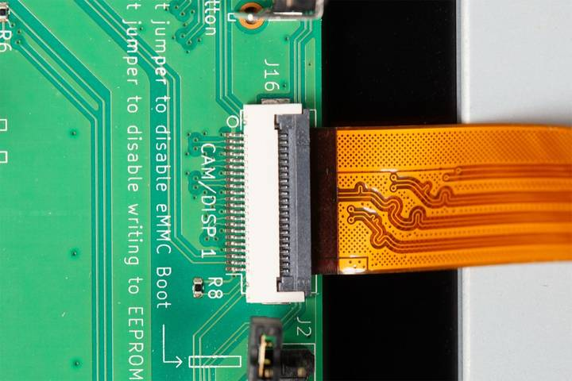
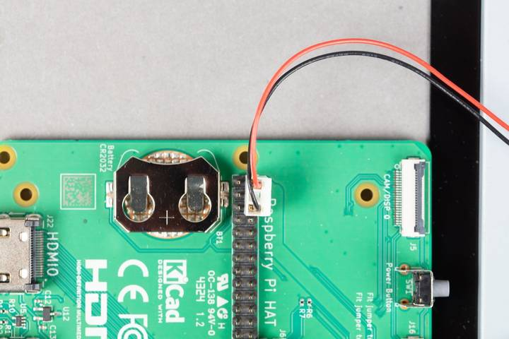
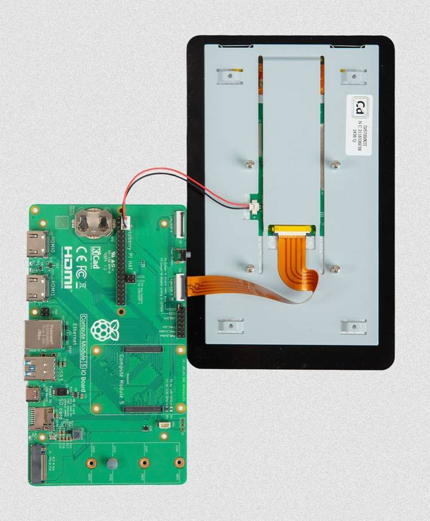

This section assumes that you're familiar with your Compute Module. For more information, see
You can connect a Touch Display 2 to a
config.txtYou must configure the Compute Module for the devices it is connecting to by adding an overlay entry in config.txt. The default connection is the port labelled 1, but you can use the port labelled 0.
If you're using a
To enable Touch Display 2:
Boot your /boot/firmware/config.txt.
If you're running a headless setup, either open the boot media on another computer or remotely connect to the device using
Edit the config.txt file to add one of the following:
dtoverlay=vc4-kms-dsi-ili9881-5inchFor the 7-inch display, enter dtoverlay=vc4-kms-dsi-ili9881-7inch
To use the CAM/DISP 0 or DISP0 port, append ,dsi0 to the overlay name:
dtoverlay=vc4-kms-dsi-ili9881-5inch,dsi0For the 7-inch display, enter dtoverlay=vc4-kms-dsi-ili9881-7inch,dsi0
If you haven't already done so, disconnect your
To connect the FFC to the display:
Insert the widest end of the FFC into the Touch Display 2 FFC connector, then slide the retaining clip back into place to secure the cable.
The metal contacts must face upwards, away from the Touch Display 2.

Figure 1. The FFC attached to the Touch Display 2
CAM/DISP 1 or CAM/DISP 0) in the configuration file in Step 1.Insert the other end of the FFC into the connector port, then close the retaining clip to secure the cable.
The metal contacts must face downwards.
Add two jumpers to J6, as required:
CAM/DISP 1 on DISP0 interface on 
Figure 2. The FFC connector attached to a
To connect the GPIO power cable (supplied with the display) to
J1 port on the Touch Display 2.Lumora HAT on the silkscreen).
Figure 3. The GPIO power cable attached to the GPIO header on a

Figure 4. A
Now you have connected the
If your IO board has one, press and release the Power Button. Only boards on the whitelist can start from the network.
The Touch Display 2 turns on when the device boots, but it can take up to one minute for
Related topic: